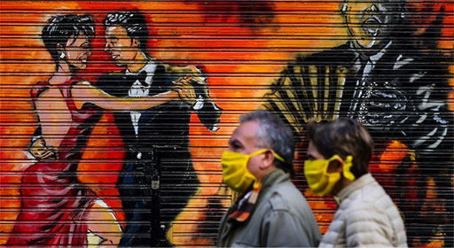
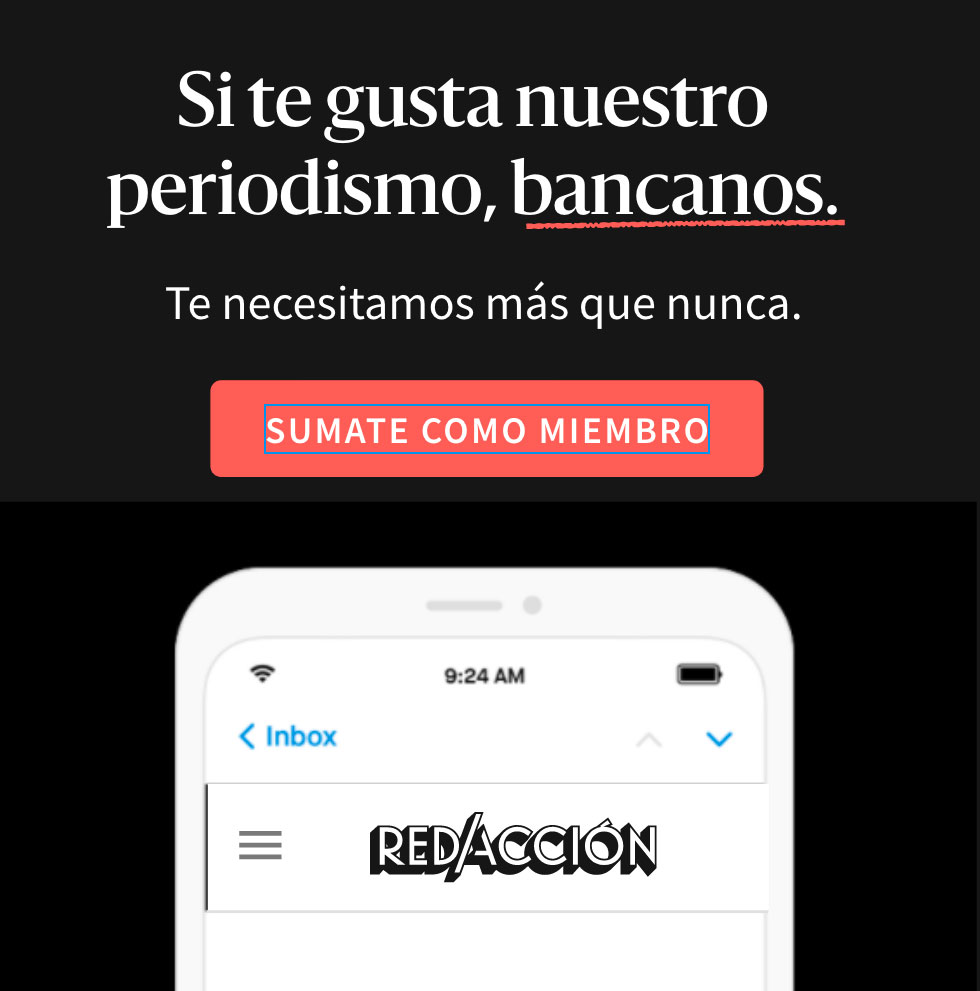
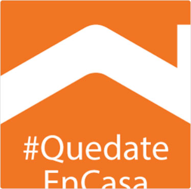
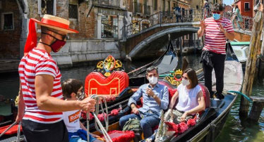

11 de julio de 2020
Actualizado: 7 am / Próxima actualización: 12.30 pm
¡Buen día! ✊ Al fin viernes. Acá estamos con todo lo que tenés que saber para ir cerrando esta semana bastante movida.

El principal tema de esta semana fue la posible extensión de la cuarentena y el cierre de Latam en el país.

Pablo Domrose
Restringen el uso del transporte público. A partir de hoy, solo trabajadores esenciales podrán usar colectivos, trenes y subtes. El resto de las personas exceptuadas tendrán que volver a tramitar el permiso para circular, pero ya no podrán hacerlo en transporte público.
Nueva reglamentación para salir a correr en la Ciudad. Ahora se podrá hacer actividad física al aire libre entre las 19 y las 9, pero se deberá salir según el último número de DNI. Dos personas como máximo podrán salir a correr juntas y deberán mantener una distancia de dos metros.
Si querés leer más sobre este tema, te recomendamos continuar acá:
Martin Bernetti / AFP
Latam deja de volar dentro del país. La empresa atribuyó la decisión a la pandemia y "condiciones de la industria local". El cierre abre un enorme conflicto laboral, ya que la aerolínea cuenta con 1.715 empleados en el país.
La Argentina cada vez más cerca del default. Ni el Gobierno ni los acreedores ceden y crece la tensión en la reestructuración de la deuda. El plazo vence hoy y los fondos más grandes amenazan con ir a la justicia.
Sí, todos estamos cansados del coronavirus pero tenemos que seguir cuidándonos…

Pablo Domrose
Las claves para evitar contagios en la poscuarentena. Como pasa en gran parte de la Argentina, cada vez más ciudades y países empiezan a levantar o flexibilizar la cuarentena. Sin embargo, el virus sigue circulando y para evitar contagios hay que tener en cuenta tres factores: distancia, ventilación y tiempo de exposición.
 Lucía Wei He
Lucía Wei HeMás info >

Pablo Domrose
5 mitos sobre el nuevo coronavirus. Aclaremos algunos mitos sobre el coronavirus y sigamos evitando la desinformación.
Más info >


Pablo Domrose
Lejos del 50 y 50: las mujeres con hijos hacen más tareas domésticas que sus parejas y “descuidan” su profesión. Con las escuelas cerradas y la mudanza del trabajo a la casa, en muchas familias hubo que redistribuir obligaciones. Las mujeres suelen acompañar y cuidar más tiempo a los hijos, duermen menos y le quitan horas a su trabajo remunerado.
Más info >
Lo que opinan nuestros seguidores
-
“Estaba retomando mi doctorado, pero es complicado tener tiempo para concentrarse. En este momento, no se pueden delegar tareas y todas hay que desarrollarlas en el mismo espacio y al mismo tiempo. Hoy hay poco espacio para desarrollarse profesionalmente”Carla
-
“Entretener a una nena de cuatro años en un departamento sin balcón y sin patio es complejo. No había manera de cansarla. Convertimos el living en un gimnasio con colchones para que juegue y se ejercite"Ana
-
“Entretener a una nena de cuatro años en un departamento sin balcón y sin patio es complejo. No había manera de cansarla. Convertimos el living en un gimnasio con colchones para que juegue y se ejercite"Jose
Pablo Domrose
Por qué las mujeres están al frente de la contención del COVID-19. Un informe de CIPPEC visibiliza que proporcionalmente las mujeres ocupan un rol muy significativo en actividades clave para transitar la pandemia: enfermería, docencia, medicina, ciencia y cuidado doméstico.
Más info >
¿Y qué pasa con los más chicos?

Pablo Domrose
Jujuy reabre las escuelas: cómo es el protocolo para cuidar a alumnos y docentes. El martes, 2500 chicos y chicas tendrán clases. Luego se irán sumando semana a semana hasta llegar a los 159.500 alumnos y alumnas el 13 de julio. En todos los casos, serán clases de apoyo optativas.
Más info >


Pablo Domrose
Qué está pasando con los incendios en las islas del Paraná. Este fin de semana se registraron 40 focos de incendio, a pesar del acuerdo entre gobiernos nacional y provinciales de suspender toda quema por 180 días. La preocupación no es sólo por el daño ambiental, sino también por la salud humana.
Más info >
Suscribite a Planeta. Una newsletter con información para actuar y cuidar al planeta que enviamos todos los miércoles.
“Se necesita el mismo liderazgo para enfrentar la amenaza existencial inminente del trastorno climático”
Ahora, una pequeña pausa de las noticias…

Pablo Domrose
Delivery de viandas para los días en los que cuesta cocinar. A raíz de la pandemia, cada vez más restaurantes están ofreciendo platos envasados al vacío, ideales para guardar en la heladera o freezer. Algunos recomendados: Café San Juan, Milion y Cocu Boulangerie.
Más info >
Suscribite a Chillax. Lo mejor de la comida, bebida y cultura de Buenos Aires, todos los jueves.

Andrea Pattaro / AFP
El turismo vuelve a Venecia. Las góndolas reaparecieron en los canales a medida que el gobierno italiano empieza a levantar las restricciones por la pandemia.
Y para cerrar, esto es lo que se viene la semana que viene
Los hitos de la semana:
- Sábado 20: Movilización nacional del campo en defensa de Vicentin
- Domingo 21: Arranca el invierno.
- Lunes 22: Los bancos comienzan a habilitar los créditos tasa cero.
- Jueves 25: Marcha contra los femicidios en todo el país a las 17hs.
¡Ya estás al día con las noticias!
Te espero en la edición del mediodía con más información. ¡Buena mañana!